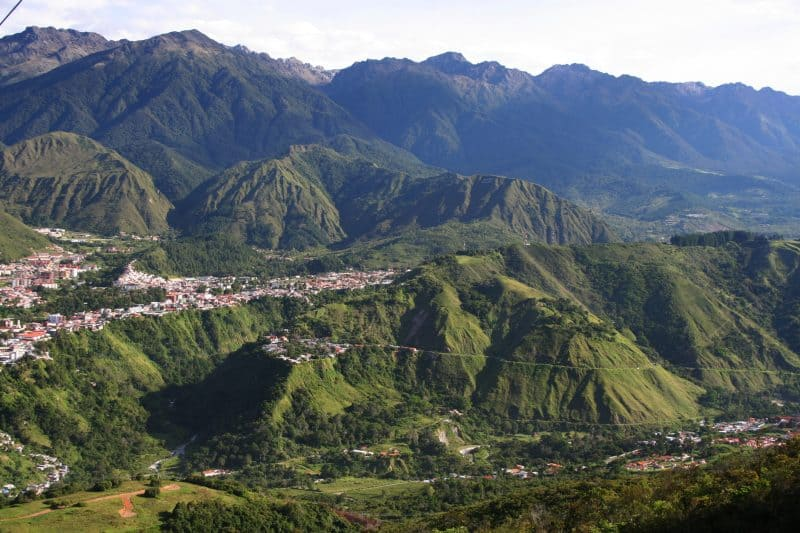
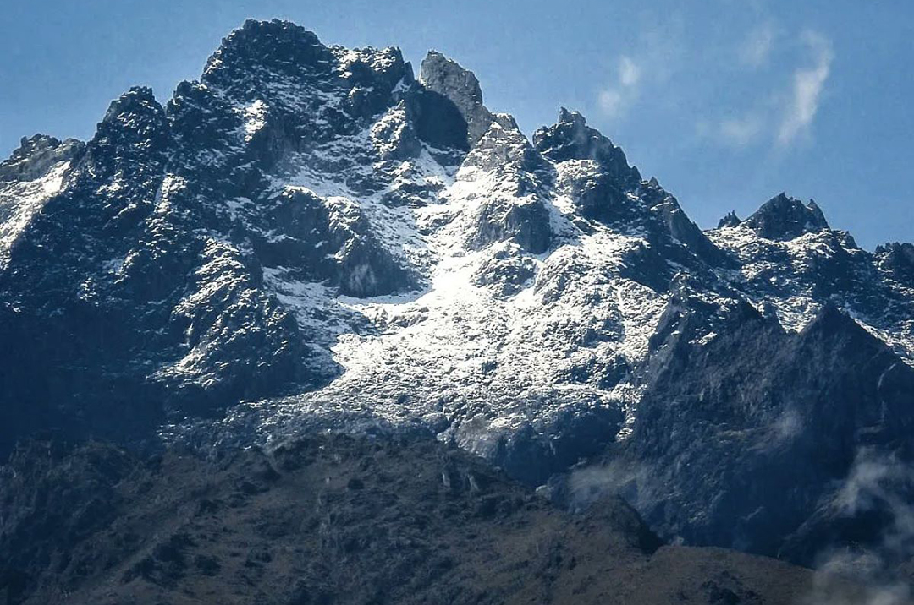
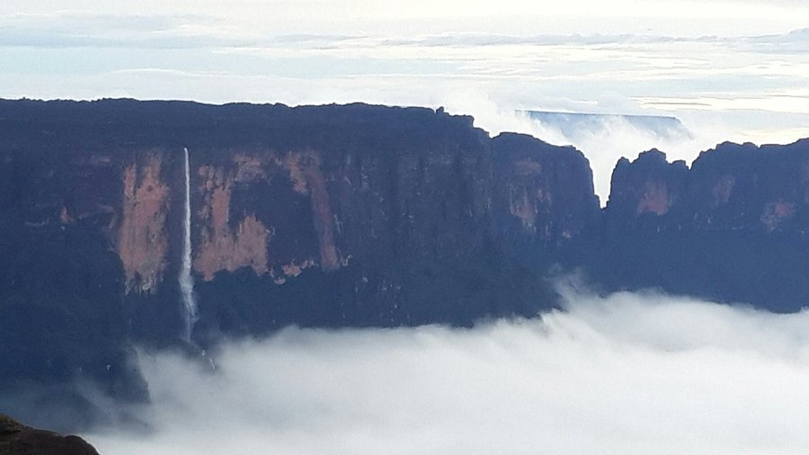
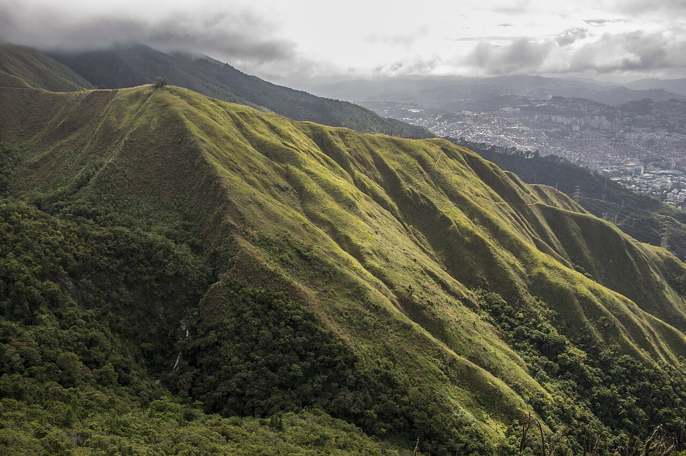
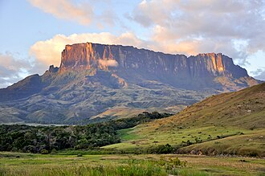

VENEZUELA'S MOUNTAINS
Venezuela's mountains are among the most geologically extraordinary on Earth — from the snow-capped Andean peaks of the northwest to the ancient, flat-topped tepuis of the southeast that rise like islands in the sky above the Gran Sabana. These are landscapes unlike anything else on the planet, shaped by forces spanning hundreds of millions of years, and home to ecosystems and wildlife found nowhere else in the world.

-
PICO BOLÍVAR

-
MOUNT RORAIMA

-
EL ÁVILA

-
GRAN SABANA TEPUIS

Pico Bolívar, standing at 4,978 meters above sea level in the Sierra Nevada de Mérida, is Venezuela's highest peak and one of the most dramatic mountains in all of South America. The city of Mérida at its base is home to the world's highest and longest cable car system — the Teleférico de Mérida — which once carried visitors in four stages from 1,577 meters all the way to 4,765 meters near the summit, offering views of snow-covered Andean peaks and glaciers that feel impossibly remote for a tropical country. The Andes of Venezuela are home to the unique páramo ecosystem — vast, windswept highlands above the treeline carpeted in frailejón plants, ancient peat bogs, and crystal-clear glacial lakes that reflect the sky in perfect stillness. Mount Roraima — rising 2,810 meters to a vast flat summit plateau at the triple border point of Venezuela, Brazil, and Guyana — is perhaps the most otherworldly mountain on Earth, and the inspiration for Arthur Conan Doyle's "The Lost World." The summit plateau, permanently shrouded in clouds, is home to endemic species of plants and animals found nowhere else on Earth, growing on ancient sandstone formations sculpted over 1.8 billion years by wind, rain, and time. The 6-day trek to Roraima's summit and back is one of the greatest hiking adventures in South America, passing through savannas, cloud forests, and finally the surreal summit landscape that feels like another planet. El Ávila National Park — rising dramatically from the Caribbean coast to over 2,765 meters directly behind Caracas — offers the remarkable experience of hiking from sea level to cloud forest in a single day, with the glittering Caribbean visible on one side and the sprawling capital on the other. The Gran Sabana's tepuis — those ancient, island-like table mountains draped in waterfalls and mist — complete one of the most extraordinary mountain landscapes on Earth, making Venezuela a destination that any serious lover of mountains simply cannot afford to miss.